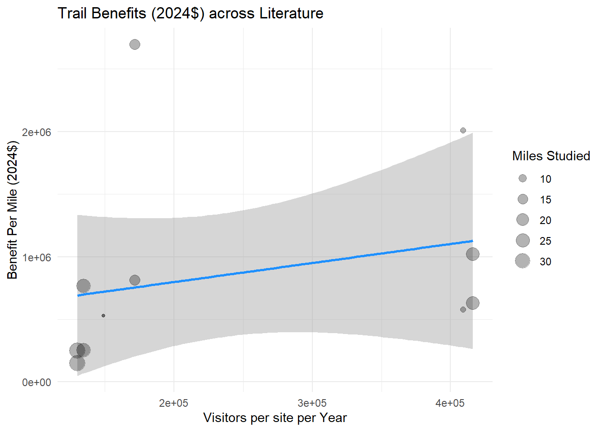
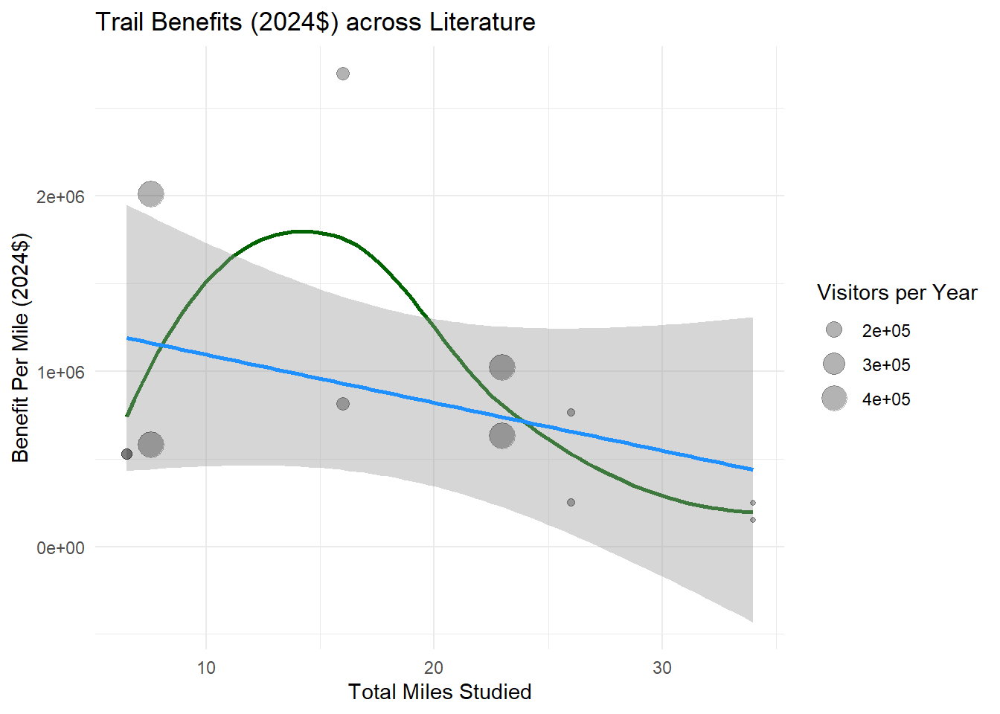

#install.packages(inflateR)
#install.packages(jtools)
library(tidyverse)
library(here)
library(janitor)
library(inflateR)Warning: package 'inflateR' was built under R version 4.5.3library(jtools)#install.packages(inflateR)
#install.packages(jtools)
library(tidyverse)
library(here)
library(janitor)
library(inflateR)Warning: package 'inflateR' was built under R version 4.5.3library(jtools)trail_benefit_data <- read_csv(here("trail_rec", "trail_benefit_meta.csv")) |>
clean_names() |>
select(lead_author:dollar_year) |>
drop_na(lead_author) |>
rename(
visitors_per_year = number_of_trail_users_per_year,
miles_studied = total_trail_miles_or_miles_added,
ben_per_person_trip_low = benefit_per_person_per_visit_trip_usd_low,
ben_per_person_trip_high = benefit_per_visit_trip_usd_high,
annual_agg_ben_low = total_benefit_annual_unless_noted_low,
annual_agg_ben_high = total_benefit_annual_unless_noted_high,
ben_per_mile_low = benefit_per_trail_mile_per_year_usd_low,
ben_per_mile_high = benefit_per_trail_mile_per_year_usd_high) |>
mutate(across(visitors_per_year:dollar_year, as.numeric))Rows: 6 Columns: 33
── Column specification ────────────────────────────────────────────────────────
Delimiter: ","
chr (21): Lead Author, Study title, Trail / Site Name, Trail Material, Count...
dbl (10): Year Published, Number of trail users (per year), Total Trail mile...
lgl (2): Estimated benefit per trail mile (2024 USD) LOW, Estimated benefit...
ℹ Use `spec()` to retrieve the full column specification for this data.
ℹ Specify the column types or set `show_col_types = FALSE` to quiet this message.trail_benefit_tidy <- trail_benefit_data |>
select(lead_author:miles_studied, dollar_year, ben_per_mile_low, ben_per_mile_high) |>
pivot_longer(cols = "ben_per_mile_low":"ben_per_mile_high",
names_to = "low_high",
values_to = "ben_per_mile")trail_benefit_tidy <- trail_benefit_tidy |>
rowwise() |>
mutate(
ben_per_mile_2024 = adjust_inflation(
amount = ben_per_mile,
from_year = dollar_year,
currency = "USD",
to_year = 2024
)
) |>
ungroup()ben_plot_vis <- ggplot(data = trail_benefit_tidy, aes (x = visitors_per_year,
y = ben_per_mile_2024)) +
theme_minimal() +
#geom_smooth(method = "loess", color = "darkgreen", se = F) +
geom_smooth(method = "lm", color = "dodgerblue", se = T) +
geom_point(aes(size = miles_studied), alpha = 0.3) +
#geom_text(aes(label = lead_author), vjust = -1.2, size = 3) +
labs(
title = "Trail Benefits (2024$) across Literature",
x = "Visitors per site per Year",
y = "Benefit Per Mile (2024$)",
size = "Miles Studied"
)
ben_plot_vis`geom_smooth()` using formula = 'y ~ x'
ben_plot_mile <- ggplot(data = trail_benefit_tidy, aes (x = miles_studied,
y = ben_per_mile_2024)) +
theme_minimal() +
geom_smooth(method = "loess", color = "darkgreen", se = F) +
geom_smooth(method = "lm", color = "dodgerblue", se = T) +
geom_point(aes(size = visitors_per_year), alpha = 0.3) +
#geom_text(aes(label = lead_author), vjust = -0.5, size = 3) +
labs(
title = "Trail Benefits (2024$) across Literature",
x = "Total Miles Studied",
y = "Benefit Per Mile (2024$)",
size = "Visitors per Year"
)
ben_plot_mile`geom_smooth()` using formula = 'y ~ x'
`geom_smooth()` using formula = 'y ~ x'
trail_ben_reg <- lm(ben_per_mile_2024 ~ miles_studied + visitors_per_year,
data = trail_benefit_tidy)
b <- coef(trail_ben_reg)
summ(trail_ben_reg, digits = 4)systemfonts and textshaping have been compiled with different versions of Freetype. Because of this, textshaping will not use the font cache provided by systemfonts| Observations | 12 |
| Dependent variable | ben_per_mile_2024 |
| Type | OLS linear regression |
| F(2,9) | 0.8826 |
| R² | 0.1640 |
| Adj. R² | -0.0218 |
| Est. | S.E. | t val. | p | |
|---|---|---|---|---|
| (Intercept) | 1071486.0806 | 741005.5974 | 1.4460 | 0.1821 |
| miles_studied | -23651.5139 | 23511.4538 | -1.0060 | 0.3407 |
| visitors_per_year | 0.9608 | 1.8405 | 0.5220 | 0.6143 |
| Standard errors: OLS |
# interaction = miles * visitors
ben_estimate <- function(miles_studied, visitors_per_year) {
b["(Intercept)"] + b["miles_studied"] * miles_studied + b["visitors_per_year"] * visitors_per_year
}
# Calculate the estimated Benefit ($) in
ben_estimate(miles_studied = 2.2, visitors_per_year = 100000) (Intercept)
1115532 # PLUG IN REAL VALUES!!!!!Result: The estimated benefit of the additional 2.2 miles of trail by the Santa Margarita River Bridge Project are $1,115,532 per year.